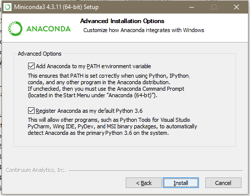
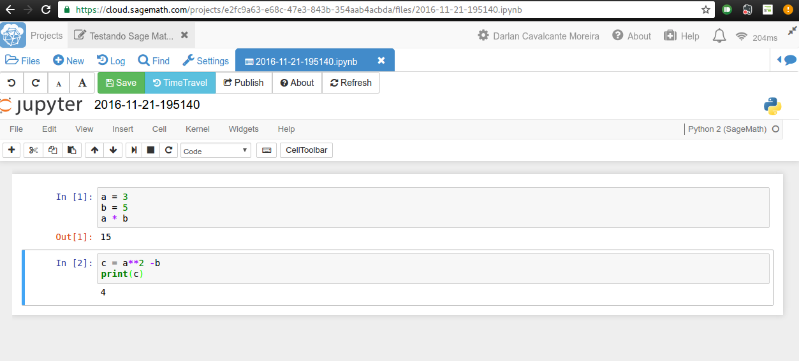
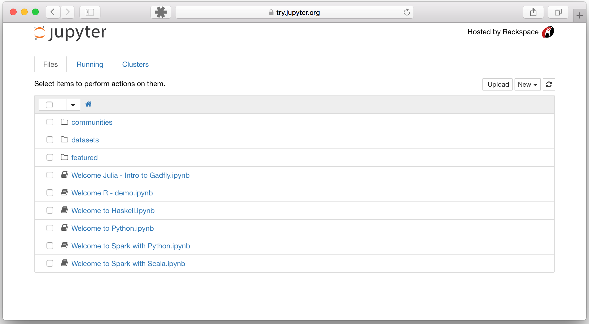

Minicurso sobre Python
Palestrante: Darlan Cavalcante Moreira
Porque aprender Python?
Fácil de entender e aprender
Muito Flexível
Extensa biblioteca disponível: "Baterias incluídas"
Vamos utilizar aqui Python 3
Qual "bateria" devo usar?
para computação numérica
O ecossistema para computação numérica em Python pode ser dividido em camadas: A linguagem Python , a biblioteca Numpy , bibliotecas baseadas no Numpy , bibliotecas para plot , terminais mais avançados , IDEs e similares
A biblioteca Numpy é o núcleo da computação científica em Python e é a mais importante de se aprender bem
Instalando Python
Python possui duas versões: Python2 e Python3
Podem baixar a partir do site oficial em https://www.python.org/downloads/
No Windows pode ser complicado instalar bibliotecas e suas dependências
Um alternativa mais fácil é usar umas das distribuições Python disponíveis:
Instalando Anaconda
Acessem o site https://www.continuum.io/downloads
Podemos baixar a versão "anaconda" ou o "miniconda"
Baixem o miniconda para Python 3
No Windows, basta executar o exe e prosseguir como indicado
No Linux, basta abrir um terminal, navegar até a pasta onde fez o download e digitar
bash Miniconda3-latest-Linux-x86_64.sh
Nota: No Windows deixem as duas caixas marcadas como na figura

Usando o conda
O programa conda funciona via linha de comando
Todos os comandos seguem o formato conda COMANDO [ARGUMENTOS]
Digitem em um terminal conda info ou conda list
Agora vamos instalar nosso primeiro pacote, o Jupyter Notebook
Digitem o comando conda install notebookO conda vai achar o pacote e perguntar se deseja prosseguir. Digitem y e apertem Enter
Nota : outros comandos úteis são update e help
Jupyter Notebook
Surgiu inicialmente como IPython Notebook, inspirado pelo Mathematica
Cada notebook quando aberto está associado a um kernel
Pode ser usado online em https://try.jupyter.org
nbviewer : Site com vários notebooks interessantes, como por exemplo esse aqui (versão local )Pode ser instalado pelo Anaconda
Rode o comando jupyter notebook para iniciar
Nota: Existem serviços que rodam na nuvem e permitem criar e executar notebooks como SageMathCloud e Wakario

Jupyter Notebook
Dashboard
Ao executar o notebook uma aba do navegador é aberta com o dashboard
Vemos os arquivos na pasta onde o comando jupyter notebook foi executado

Jupyter Notebook
Editor
No dashboard, cliquem em "New" e escolham o kernel indicado como Python3 para criar um novo notebook
Executar o tour pela interface em "Help
As células podem ser de dois tipos: markdown e code
Células do tipo "markdown" contém texto que é renderizado usando a notação markdown
Células do tipo "code" contém código que será executado, possivelmente resultando em alguma saída mostrada abaixo
Em alguns caso a saída será mostrada em um formato mais apropriado
Jupyter Notebook
Exercício
Crie uma célula markdown contendo texto com alguma formatação em markdown
Uma célula abaixo definindo duas variáveis com números
Crie uma célula abaixo somando as duas variáveis
Faça um merge das duas células anteriores
Crie uma célula vazia
Delete a célula vazia recém criada
Jupyter Notebook
Mais que um terminal
O editor do Jupyter possui algumas melhorias que não são possíveis em um terminal
obj? mostra informações do objeto em um pager Shift +Enter em uma função mostra a docstring da função em um popupRich Display System : Estende o método nativo __repr__ do Python para outras representações e o notebook vai escolher a mais apropriadaRepresentações possíveis: HTML, JSON, PNG, JPEG, SVG, LaTeX Etc.
Automatizando as coisas chatas com Python